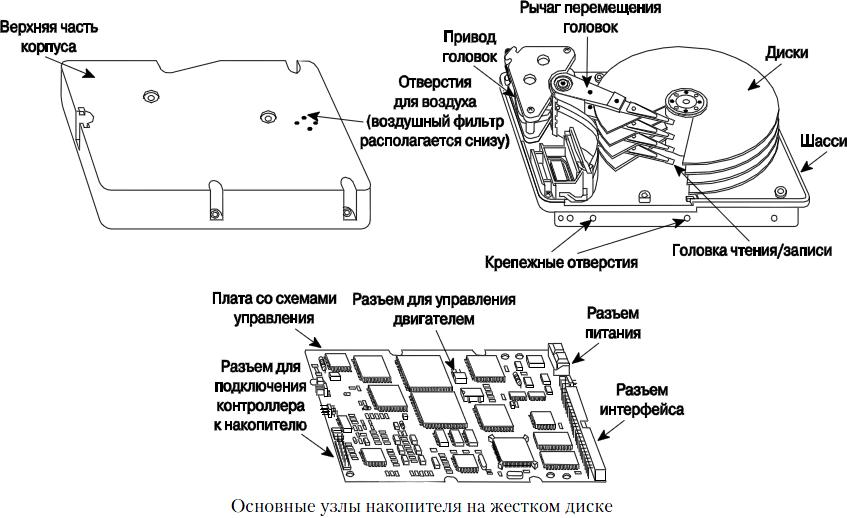
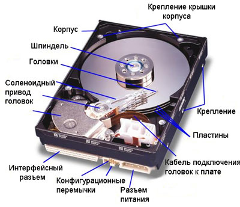
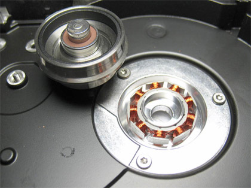
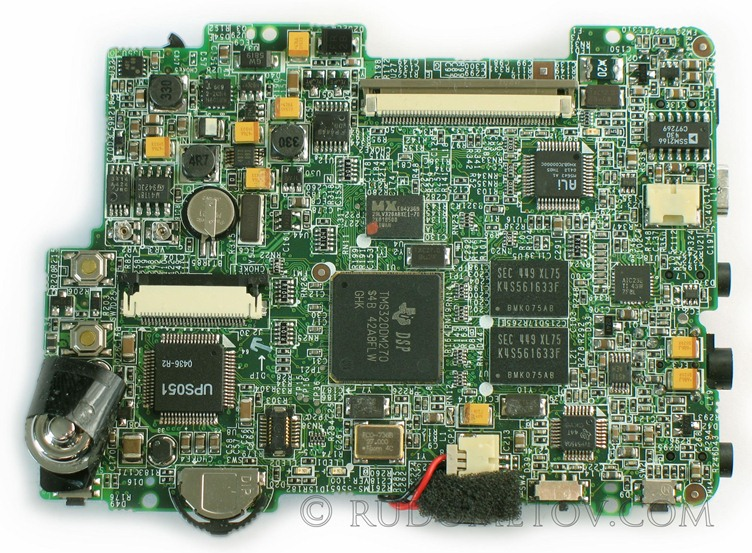

Накопители на жестких магнитных дисках или HDD (НЖМД, HardDiskDrive) по многим техническим характеристикам (информационной емкости, времени обращения, скорости обмена данными, надежности и др.) значительно превосходят НГМД, обеспечивая более производительную и надежную работу ПЭВМ. Их конструкции (форм-фактор) имеют, как правило, такие же размеры и диаметр дисков, что и НГМД, те же напряжения электропитания (5 В – логика и 12 В - двигатель). Наименование диска – жесткий – подчеркивает его отличие от гибкого диска: магнитное покрытие наносится на жесткую подложку.
HDD содержат большее число электромеханических узлов и механических деталей, поэтому значительно сложнее по конструкции, а, следовательно, и дороже. Большинство моделей НЖМД, применяемых в ПЭВМ, выполняются несменными.
В настоящее время наибольшее распространение получили 3 – хдюймовые HDD (89 мм). Цифры обозначают диаметр используемых в HDD магнитных дисков.
Конструктивно в состав HDD входят:
Корпус (гермоблок) состоит из основания и крышки. Внутри корпуса находятся все механизмы и некоторые электронные узлы (пpедусилитель и схема записи). Он предназначен для:
Корпус не герметичен, т. к. для выравнивания внутреннего и внешнего давления (для нормального полета головок), перекачка воздуха осуществляется сквозь специальный барометрический фильтр, задерживающий частицы размером более 0,3 мкм. Для создания «сверхчистой» среды внутри корпуса обеспечивается очистка воздуха фильтром рециркуляции от частиц рабочего слоя носителя, которые могут возникать внутри самого корпуса, например за счет осыпания поверхности дисков при «взлетах» и «посадках» головок в зоне парковки, или проникать внутрь корпуса через барометрический фильтр. Место расположения фильтра рециркуляции выбирается с учетом движения воздушного потока и возможных траекторий движения частиц таким образом, чтобы обеспечить максимальную степень очистки воздушного потока внутри камеры.
Т.о., надежность работы HDD повышается (меньше вероятность выхода из строя МГ), а возможность возникновения ошибок при записи или считывании информации из-за попадания частиц между головкой и носителем сводится к минимуму.
Технология сборки HDD предусматривает их производство только в чистых помещениях, соответствующих требованиям класса 100. Это означает, что в одном кубическом футе воздуха может присутствовать не более 100 пылинок размером от 0,5 мкм (т.к. головки парят над поверхностью на высоте 0,08...0,12 мкм).
Вскрывать корпус можно только в производственных условиях, в так называемой "чистой зоне", что исключает попадание внутрь пыли и других вредных веществ. Накопители зарубежных фирм, как правило, имеют специальную надпись на верхней крышке корпуса. Надпись обычно выполняет роль предохранительной пломбы и гласит следующее: "Вскрытие изделия прекращает действие гарантии".
Количество дисков в HDD в основном ограничивается высотой корпуса (и маркетинговыми соображениями) и составляет от 1 до 11.
Жесткий магнитный диск — круглая пластина. Требования:
Диски изготавливаются из сплавов алюминия (толщиной 1...2 мм) или стекла с керамическими включениями. Стеклокерамические диски более прочны и при тех же параметрах более тонкие, чем диски из алюминиевого сплава. Также они менее восприимчивы к колебаниям температуры, т. е. их размеры при нагревании и охлаждении изменяются весьма незначительно (мал температурный коэффициент расширения материала).
Диск покрывается магниточувствительным рабочим слоем. Механическая прочность и устойчивость рабочего слоя определяет долговечность дисков.
Самыми распространенными являются два типа рабочего слоя:
Ранее применялись накопители, в которых для хранения информации применялся сравнительно толстый и менее долговечный слой оксида железа, который в виде ферролака наносился на рабочие поверхности дисков (такое же покрытие используется при изготовлении обычной магнитной ленты). Цвет диска получается коричневый или желтый.
В последние годы изготовители HDD сосредоточили свое внимание на повышении долговечности носителей и отыскании самых рациональных способов записи информации. Одним из наиболее важных достижений в этой области является появление носителей с тонкопленочным напыляемым покрытием.
При их изготовлении мелкозернистое металлическое соединение наносится на поверхность диска методом напыления. Современные модели накопителей работают с дисками, покрытыми слоем сплава кобальта толщиной порядка 0,025-0,08 мкм. Технология его нанесения близка к той, которая используется при производстве интегральных микросхем. Поверх магнитного слоя наносится очень тонкое ( ~ 0,025 мкм) углеродное защитное покрытие, имеющее высокую прочность. Цвет диска – серебристое зеркало.
В связи с тем, что слой напыляемого покрытия тоньше и однороднее, чем слой оксида, стало возможным записывать на диск информацию с большой плотностью. Это повлекло за собой сокращение числа необходимых для хранения информации дисков и уменьшение их размера.
Нужно заметить, что не вся поверхность диска используется для хранения информации. Рабочая область , как и на грампластинке, занимает только среднюю часть поверхности. Наружная часть поверхности (расположенная возле внешнего радиуса) не используется ввиду того, что на ней возможно наличие механических дефектов, связанных с технологией изготовления дисков. Внутренняя часть поверхности не используется по той же причине, а кроме того, эта зона нужна для размещения в ней головок записи-чтения при транспортировании HDD. Это исключает порчу информации в рабочей зоне при соприкосновении головок с поверхностью диска вследствие воздействия вибрации.
Двигатель, приводящий во вращение магнитные диски, является шпиндельным (Spindel). Шпиндель – это ось, на которой собраны все пластины (диски).
Шпиндельный двигатель связан с осью вращения дисков непосредственно (без передаточных шестерен, пружин и т. п.). В первых моделях накопителей на жестких дисках шпиндельный двигатель располагался в их нижней части, под гермоблоком. Во многих современных устройствах двигатель встраивается внутрь пакета дисков, представляя собой центральную его часть. Такая конструкция позволяет, не изменяя размера накопителя по высоте, увеличивать количество дисков.
Требования к шпиндельному двигателю:
Скорость вращения двигателя современных накопителей колеблется от 3600 до 10000 и даже 15000 об/мин [Rotates per minute — RPM). Эта характеристика в значительной мере определяет производительность накопителей. Повышение скорости вращения двигателя — это заметный рост скорости передачи данных и значительное снижение времени доступа к ним.
Благодаря повышению скорости вращения шпиндельного двигателя до 10000 об/мин внутренняя скорость передачи данных повышается и превосходит на 40% соответствующий параметр накопителей со скоростью вращения двигателя 7200 об/мин.
Однако высокие скорости вращения порождают проблемы, связанные с балансировкой, гироскопическим эффектом и аэродинамикой головок. Из-за гироскопического эффекта не рекомендуется перемещение (точнее, смена ориентации оси шпинделя) включенных накопителей с вращающимся шпинделем. Накопители для портативных компьютеров разрабатываются с учетом этих эффектов.
Для того, чтобы сократить время выхода накопителя в рабочее состояние, двигатель при включении некоторое время работает в форсированном режиме. Поэтому источник питания компьютера должен иметь запас по пиковой мощности. При установке нескольких НЖМД можно организовать их поочередное включение.
Все магнитные головки накопителя конструктивно объединенны в блок и размещены на подвижном позиционеpе.
Головки крепятся к рычагу, который обеспечивает их перемещение над поверхностью пластин от трека к треку. В эту сборку (по-английски она называется Slider Assembly) входят головки чтения-записи, слайдер, который опускается на поверхность пластин при выключении питания и их остановке, а также сам рычаг привода головок.
Вращающиеся пластины создают внутри герметичного корпуса очень сильный поток воздуха, который вследствие аэродинамического эффекта отрывает головки от их поверхности. Но этого недостаточно для надежной работы дисковода, так как головки должны не просто лететь, а находится на строго определенной высоте на расстоянии 0,08-0,12 мкм от поверхности диска, не касаясь его. Поэтому рычаг привода и слайдер рассчитываются по всем законам аэродинамики и представляют собой нечто вроде самолетного крыла, только в тысячи раз миниатюрнее и точнее.
Высота «полета» головки должка выдерживаться довольно строго, иначе магнитные поля головок будут «промахиваться» мимо рабочего слоя. Высота определяется тем положением, когда подъемная сила, определяемая скоростью вращения, формой «крыла» головки и плотностью воздуха, уравновесит давление прижимающей головку пружины. Плотность воздуха меняется в зависимости от атмосферного давления, и по этой причине в параметрах накопителей указывают максимальную высоту над уровнем моря, на которой может работать накопитель (или минимальное атмосферное давление).
Все магнитные головки перемещаются одновременно, осуществляя параллельный доступ к одноименным дорожкам с одинаковыми номерами, т.е. к цилиндру. При выполнении операций записи-чтения контроллер выбирает одну из головок, т.е. в каждый момент времени запись или чтение может производиться только на одной дорожке.
Печатная плата с электронными компонентами (printed circut board, PCB) - съемная, подключается к геpмоблоку чеpез один-два pазъема pазличной констpукции. Находится внизу НЖМД.
Все схемы содержат как цифровые, так и аналоговые компоненты. Они расшифровывают команды контроллера жесткого диска (в старых моделях он был внешним) и передают их в виде изменяющегося напряжения на двигатель, перемещающий магнитные головки к нужному цилиндру диска. Кроме того, они управляют приводом шпинделя, стабилизируя скорость вращения пакета дисков, генерируют сигналы для головок при записи, усиливают эти сигналы при чтении и управляют работой других электронных и механических узлов накопителя.
В современных НЖМД с интерфейсами АТА (он же IDE) и SCSI контроллер встраивается на плату электpоники.
Т. о., на плате электpоники pасположены:
Hа одних винчестеpах пpогpамма пpоцессоpа полностью хpанится в ПЗУ, на дpугих опpеделенная ее часть записана в служебной области диска.
Hа диске также могут быть записаны паpаметpы накопителя (модель, сеpийный номеp и т.п.). Hекотоpые винчестеpы хpанят эту инфоpмацию в электpически пеpепpогpаммиpуемом ПЗУ (EEPROM).
Многие винчестеpы имеют на плате электpоники специальный технологический интеpфейс с pазъемом, чеpез котоpый пpи помощи стендового обоpудования можно выполнять pазличные сеpвисные опеpации с накопителем - тестиpование, фоpматиpование, пеpеназначение дефектных участков и т.п.
У некоторых накопителей технологический интеpфейс выполнен в стандаpте последовательного интеpфейса, что позволяет подключать его чеpез адаптеp к алфавитно-цифpовому теpминалу или COM-поpту компьютеpа. В ПЗУ записана так называемая тест-монитоpная система (ТМОС), котоpая воспpинимает команды, подаваемые с теpминала, выполняет их и выводит pезультаты обpатно на теpминал
На этой же плате обычно находятся интерфейсный разъем и разъем для подачи питающих напряжений. Как правило, НЖМД требуют двух номиналов питания: +5В и +12В. Очередность подачи питающих напряжений не регламентируется. Напряжение +5В питает интерфейсные схемы, узлы записи-чтения, следящую систему и другие узлы управления. От напряжения +12В питаются схемы, управляющие позиционированием головок записи-чтения и вращением шпинделя. Заметим, что неверная цоколевка внешнего разъема питания (подача +12В вместо +5В или ошибочная подача напряжений с обратной полярностью) практически всегда выводит НЖМД из строя. Ввиду использования многими фирмами в своих изделиях специальных БИС, ремонт таких НЖМД крайне затруднен.
Современные контроллеры имеют встроенную кэш-память, от размера которой и алгоритма использования сильно зависит производительность обмена данными.
Общепринятой технологией кэширования диска является упреждающее считывание (Read Ahead). Суть его проста: если контроллер получает запрос на чтение сектора, то он автоматически считает в буфер и секторы, следующие за запрошенным. Весьма вероятный запрос к следующему сектору будет обслужен из буфера без задержки (Latency), которая возможна из-за естественной несинхронизируемости действий операционной системы и приложений с вращением диска.
Более «ловкие» контроллеры идут дальше: они считывают в буфер весь трек, как только выполнится команда позиционирования, а когда придет следующая за ней команда чтения, данные уже будут в буфере. Такие хитрости (Zero Eatency — нулевая задержка) позволяет система команд интерфейса SCSI.
Как и для всякой кэш-памяти, для эффективности встроенного кэша накопителя существенным фактором является алгоритм выделения памяти и замещения старых записей. Как обычно, замене подлежат наиболее старые записи. Вопрос о размере выделяемых областей для упреждающего чтения может решаться исходя из текущей статистики обращений.
Контроллер с адаптивным кэшированием, заметив, что последние запросы чтения являются одиночными, перестанет выделять большие области под упреждающее чтение. Если характер запросов изменится, адаптивный контроллер примет соответствующие решения.
Кроме того, отпечаток на алгоритм кэширования накладывает и многозадачный характер современных операционных систем и их дисковых запросов – многосегментный кэш. Таким образом, многозадачность проникает и во встроенные контроллеры дисков.Хранение и извлечение данных с диска требует взаимодействия между операционной системой, программами BIOS, контроллером жесткого диска и электронными и механическими компонентами самого НЖМД.
{kind=link}
{kind=link}
{kind=link}
{kind=link}
{kind=link}
{kind=link}